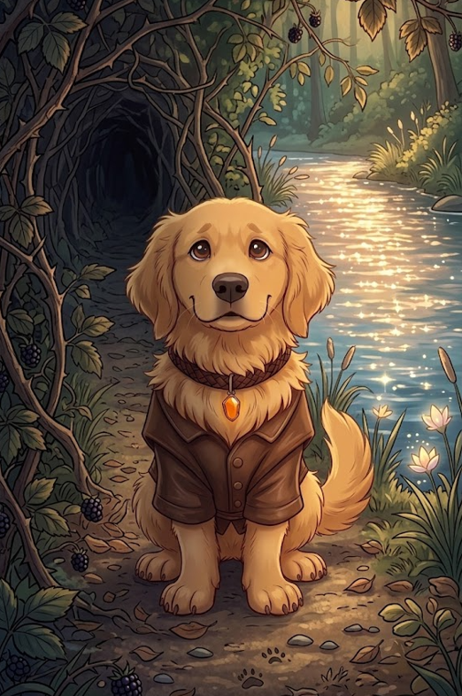

1/3
Camino actual: El Bosque del Ocaso
🔊 Narración:
El sol comienza a ocultarse, pintando el cielo de tonos rosados y naranjas. Nami, moviendo la cola con nerviosismo, olfatea el aire. Huele a pino y a tierra húmeda, pero no huele a casa. Frente a ella, el bosque se divide en dos caminos misteriosos.
A la izquierda, unos densos arbustos de moras forman un túnel oscuro. A la derecha, se escucha el sonido de un río brillante.
♦ ───── ♦